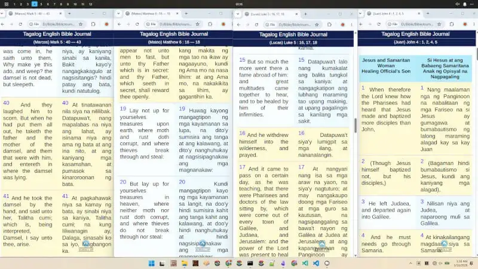

Spanish Tagalog English Bible Journal
This book of the law shall not depart out of thy mouth;
but thou shalt meditate therein day and night,
that thou mayest observe to do
according to all that is written therein:
for then thou shalt make thy way prosperous,
and then thou shalt have good success.
- Joshua 1:8

Tagalog Spanish English Online Bible for your Journaling, that can be stacked up four windows on one desktop. This year 2026, I redesigned a website from 2012 EnglishTagalogBible.Com for my need of reading Matthew, Mark, Lucas, and John's gospel simultaneously, to write on my journal. Helpful to people who love to read side by side scattered bible verses. The 2012 website was a ministry of Navigator Philippines with their details at the end of this page, and their running advocacy, website and online bible.
Bible Journaling is also the best thing there is, as you're learning as you read and write, and contemplate God's wonderful knowledge. Lessons from Old Testament, up to given to Jesus on New Testament, and shared to us God's Word, Light and Salvation, and Golden Promise, and Most important of all, Love.

You may highlight, multiple verses, continuous or even random, by entering their number, and pressing enter. You can copy, and paste, without using your mouse to drag and select verses. You can customize below the font size, font type, and even the background of your bible reading, to make it personal for you. You can navigate using swipe, or left and right arrow, when going to next or previous chapter or verses.
Bible available in Santa Biblia - Reina Valera 1909 (Spanish Language) World English Bible (English) King James Version KJV (English) Ang Biblia 1905 Young's Literal Translation DIGLOT
For any question, you may contact and message me at angpagibigngdios@gmail.com
YOU MAY CLICK ALL THE BUTTON BELOW TO TEST YOUR CUSTOMIZATION.
And look at the sample bible page below. Change Font Size, Style, Boldness, Bible Side by Side and Background of Website.
| BEGOTTEN SON | BUGTONG NA ANAK |
| 16 For God so loved the world, that he gave his only begotten Son, that whosoever believeth in him should not perish, but have everlasting life. |
16 Sapagka't gayon na lamang ang pagsinta ng Dios sa sanglibutan, na ibinigay niya ang kaniyang bugtong na Anak, upang ang sinomang sa kaniya'y sumampalataya ay huwag mapahamak, kundi magkaroon ng buhay na walang hanggan.
|
| 17 For God sent not his Son into the world to condemn the world; but that the world through him might be saved. |
17 Sapagka't hindi sinugo ng Dios ang Anak sa sanglibutan upang hatulan ang sanglibutan; kundi upang ang sanglibutan ay maligtas sa pamamagitan niya.
|
| 18 He that believeth on him is not condemned: but he that believeth not is condemned already, because he hath not believed in the name of the only begotten Son of God. |
18 Ang sumasampalataya sa kaniya ay hindi hinahatulan; ang hindi sumasampalataya ay hinatulan na, sapagka't hindi siya sumampalataya sa pangalan ng bugtong na Anak ng Dios.
|
Serif
Serif
Serif
Sans-Serif
Sans-Serif
Sans-Serif
Sans-Serif
Sans-Serif
| BEGOTTEN SON | BUGTONG NA ANAK |
| 16 For God so loved the world, that he gave his only begotten Son, that whosoever believeth in him should not perish, but have everlasting life. |
16 Sapagka't gayon na lamang ang pagsinta ng Dios sa sanglibutan, na ibinigay niya ang kaniyang bugtong na Anak, upang ang sinomang sa kaniya'y sumampalataya ay huwag mapahamak, kundi magkaroon ng buhay na walang hanggan.
|
| 17 For God sent not his Son into the world to condemn the world; but that the world through him might be saved. |
17 Sapagka't hindi sinugo ng Dios ang Anak sa sanglibutan upang hatulan ang sanglibutan; kundi upang ang sanglibutan ay maligtas sa pamamagitan niya.
|
| 18 He that believeth on him is not condemned: but he that believeth not is condemned already, because he hath not believed in the name of the only begotten Son of God. |
18 Ang sumasampalataya sa kaniya ay hindi hinahatulan; ang hindi sumasampalataya ay hinatulan na, sapagka't hindi siya sumampalataya sa pangalan ng bugtong na Anak ng Dios.
|
CHOOSE BOLDER LETTER FOR BETTER READING:
350
400
500
600
700
800
Background Settings For Website and Pages
The picture is sample of how you can customize. You can upload below, or choose background color if you like simple one.

PLAIN BACKGROUND COLOR
Click the square to drag and choose color. Click outside and apply.WEBSITE BACKGROUND IMAGE
I am not affiliated but through Christ and God we are one. And the PHILNAV is an extreme blessed and God given people to spread gospel of Christ and God's Kingdom.
www.philnavs.org
The Navigator Institute (NI) is the Philippine Navigators’ arm for equipping a generation of laborers among Navigator constituents and the bigger body of Christ. Navigator Institute serves the following purposes:
( 1 ) Facilitate the development of deep spirituality (spiritual disciplines) and capacity building primarily for our staff, laborers, and contacts; Standardize our training materials and approach (to maintain our distinctive); ( 2 ) Make training more effective and accessible (adult learning theories, modalities- online, F2F, hands-on, independent, place based, mission field exposure); ( 3 ) Strengthen the regional training capacity so that region will develop their training programs that respond to their context and be willing to share with other regions; and ( 4 ) Provide an avenue for research to formulate ideas and approaches to address issues and challenges (e.g., trauma, reaching out to the poor and marginalized, becoming generational leaders); also hermeneutical community (LGBTQ, divorce, remarriage, etc.)
One of the outcomes of Navigator's spiritual equipping programs is sending Filipinos in the mission field either as full-time missionaries or as tent-makers through an approach we call ‘Insider’ evangelism – the lifestyle of attracting people to the Gospel in the midst of a naturally unbelieving context.
The online bible was freely distributed through the mnistry of PhilNavigation. And you can click their provided link to visit their website and know more — OR — you may download the original 2012 HTML bible from EnglishTagalogBible.Com. You may contact them at .


The love of GOD is the center of it all.
Nothing lasts, but the word of God.
God is the word, and God's words will last. And on Earth Jesus is the Word of God who feeds us Knowledge of God's Love for All of Us.
No one knows the better the God Father than the Begotten Son. Ask Jesus to make God Father known to you, and you be known.
John 3 : 16
For God so loved the world, that he gave his only begotten Son, that whosoever believeth in him should not perish, but have everlasting life.
Juan 3 : 16
Sapagka't gayon na lamang ang pagsinta ng Dios sa sanglibutan, na ibinigay niya ang kaniyang bugtong na Anak, upang ang sinomang sa kaniya'y sumampalataya ay huwag mapahamak, kundi magkaroon ng buhay na walang hanggan.
I am evangelist Jestoni from the Philippines who used to travel with my mother to different places and listen and spread God's words. God help me and guide me to be back on my feet to spreading God's gospel again. And I decided to share Bible Journals, this redesigned website, and soon my youtube videos of lessons from God and Bible. And share that no one loves us more than JESUS AND HIS ONLY ONE GOD FATHER, who is most loving amongst all, from inside and outside, and everywhere.
I am here to help share people of those victims of gang stalking, demonic possessions, spiritual attacks, from marine evil spirits, or any other trickery being done and deviced by the kingdom of darkness, that which, we are GOD'S LIGHT to shed, shred, and save others from traps, manipulations and deceit. That which, God gave us, Bible, and God's Words, and Jesus as the greatest word and light of all.